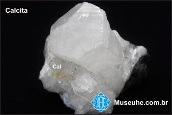

Calcita
Síntese das principais características, ocorrências e origem da calcita.
Se trata de um mineral natural com composição química CaCO3, sendo um carbonato de cálcio e o principal constituinte do calcário. Bastante utilizado em diversos segmentos industriais distintos devido a sua versatilidade, a calcita possui também importante aplicação do setor industrial de cosméticos, apesar de o volume de material consumido por essas indústrias ser relativamente baixo comparado à outros setores (construção civil, fertilizantes, entre outros).
Encontrada na forma natural, principalmente, como constituintes do calcário, dolomitos e mármores, podem também estar presentes em outras formas como em cavernas constituindo espeleotemas, em veios hidrotermais resultados de precipitação de soluções ricas em cálcio, em carbonatitos (rochas ígneas formadas a partir do resfriamento de magmas ricos em cálcio e outros álcalis) ou em recifes de corais e conchas, onde foram formadas por ação biogênica.
A calcita possui cor branca ou incolor, clivagem perfeita e romboédrica, baixa dureza, brilho predominantemente vítreo, alta reatividade e sua ocorrência é abundante, inclusive no Brasil.
Os principais depósitos brasileiros de calcita estão localizados nos municípios de Cachoeiro de Itapemirim-ES, Castelo-ES, Aiuaba-CE e Ribeira-SP. Além disso o Calcário pode ser encontrado de forma abundante nos estados do Ceará, Espírito Santo, Minas Gerais, Mato Grosso, Mato Grosso do Sul e São Paulo.
